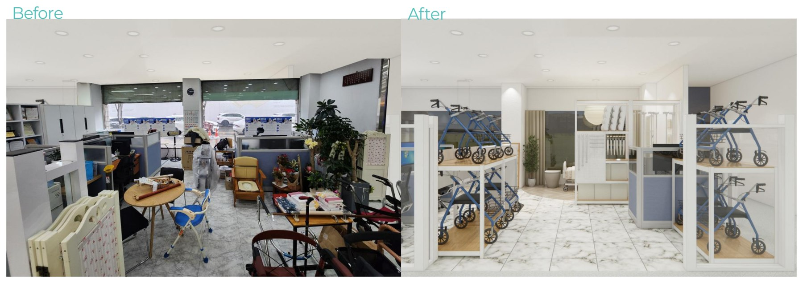
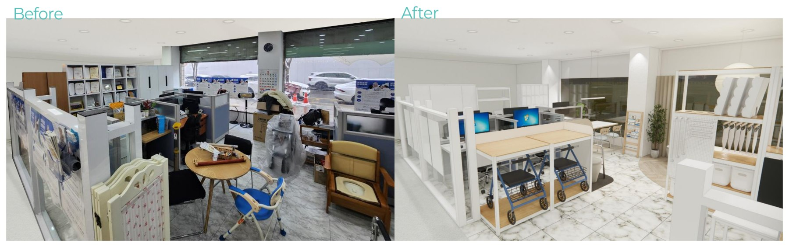
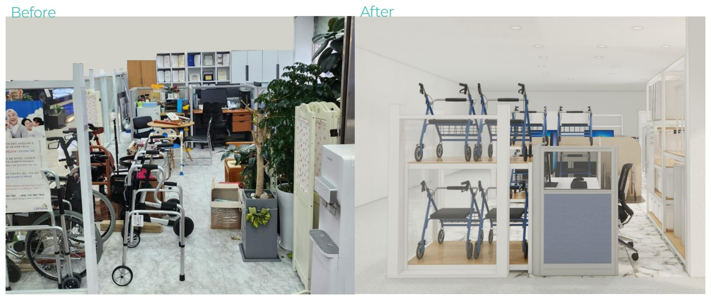
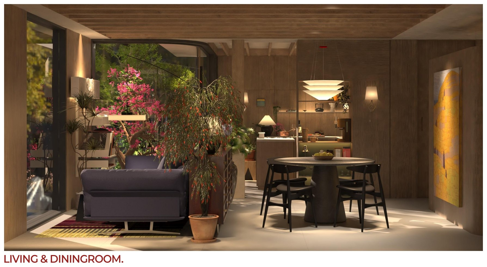
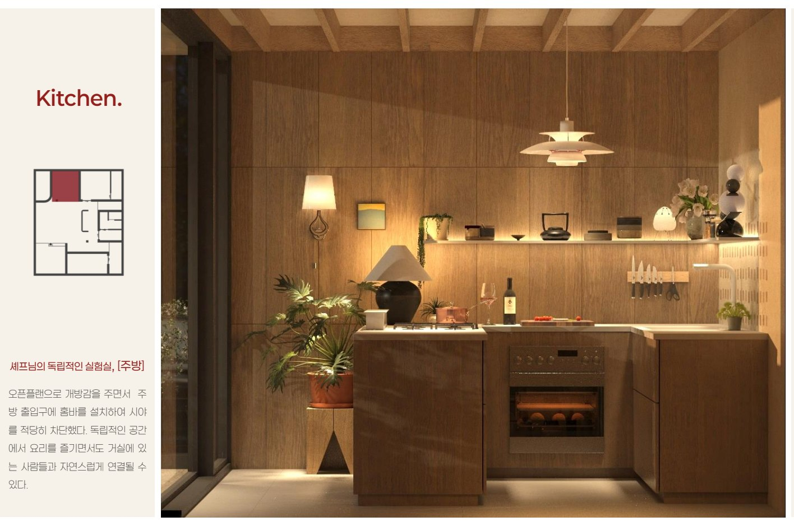

01 / Residential노후 주택의
노후 주택의
전기 용량 문제
과제 낮은 전력 용량으로 가전 사용 시 차단기가 내려갈 위험이 있었습니다.
해결 5곳의 업체에 자문해 메인 차단기 교체와 계약 전력 증설 방안을 확인했습니다. 이력서에 따르면 추가 공사비와 일정 지연 없이 문제를 해결했습니다.
사용자의 일상과 현장의 조건을 함께 살피며, 공간에 맞는 실용적인 답을 찾아갑니다.
현장 실측부터 도면과 3D 모델링, 자재 상담과 발주까지 공간이 완성되는 과정을 경험했습니다. 제약을 세심하게 살피고 공간의 쓰임에 맞는 방법을 고민합니다.
과제 낮은 전력 용량으로 가전 사용 시 차단기가 내려갈 위험이 있었습니다.
해결 5곳의 업체에 자문해 메인 차단기 교체와 계약 전력 증설 방안을 확인했습니다. 이력서에 따르면 추가 공사비와 일정 지연 없이 문제를 해결했습니다.
과제 일자형 주방의 조리 공간과 가전 수납이 부족했습니다.
해결 벽체를 300mm 연장해 아일랜드 식탁과 수납공간을 확보하고, 현관 신발장 깊이도 함께 늘렸습니다.
과제 문 설치가 어려운 조건에서 프라이빗한 공간이 필요했습니다.
해결 입구 동선을 엇갈리게 배치한 곡선형 가벽으로 시선을 차단하고, 가벽 자체를 공간의 아트월로 활용했습니다.
과제 철거할 수 없는 내력벽 때문에 침실 통로가 좁아졌습니다.
해결 침대 방향을 바꾸고 폭을 줄인 수납장을 계획해 통로 폭을 400mm에서 650mm로 넓히는 방안을 마련했습니다.
과제 한정된 예산 안에서 상담과 업무, 전시가 가능한 공간을 조성했습니다.
해결 고객 상담과 설계, 자재·가구 선정, 시공 일정 조정에 참여하고 공간에 어울리는 소품을 직접 제작했습니다.



계획 부부의 생활 방식에 맞춰 거실과 서재를 연결하고, 나무 소재와 테라스 텃밭을 활용한 주거 공간을 구상했습니다.

